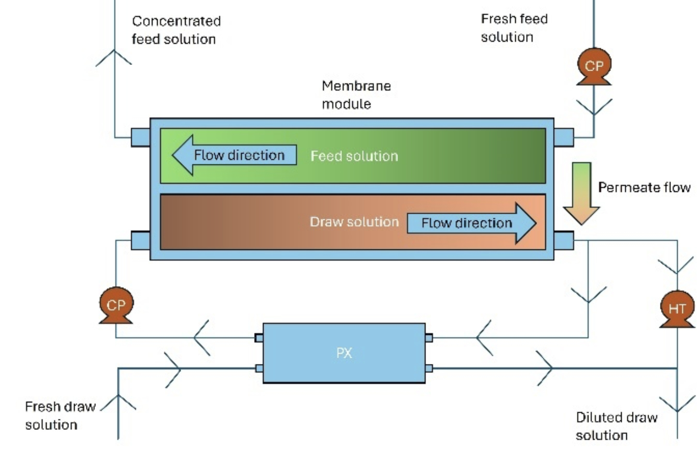
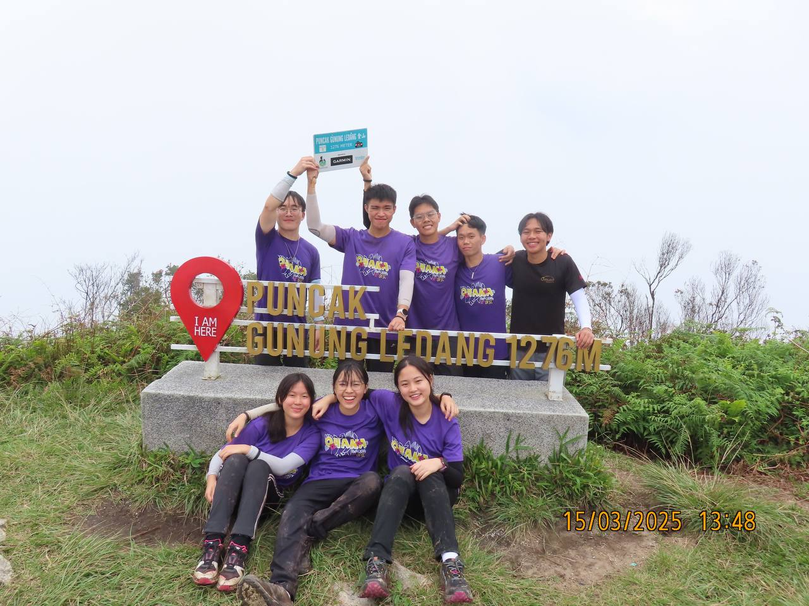

Jun 2022 – Jun 2025
Outdoors Education Students Club
Executive VP, Treasurer
Ran a S$20K yearly budget and biweekly trekking, climbing and orienteering for 34 members.
Club Instagram ↗I'm Alina, an Electrical and Computer Engineering student at Duke.
Designed and soldered the circuit boards, 3D printed the parts and wrote the firmware. A lot broke before it finished the course, which is exactly why finishing felt good.
Read the trail log →Measuring methane from waste lagoons from the air, where weight, durability, pressure effects and accuracy all pull against each other.
Follow along →
An economic model of a 1 MW pressure-retarded osmosis plant, testing how membrane innovations change its cost of electricity.
Read the paper (PDF) ↗A 3D printed flying propeller toy that makes basic physics something you can hold.
An ultrasonic sensor and a buzzer, programmed to notice when something gets too close.
Designed and built from PVC pipe. [Add: range, what you'd change]
I spent three years leading my school's outdoors club: bouldering, outdoor cooking, cycling and kayaking. That was when I learnt about orienteering: navigating to checkpoints using a map. The very first time I orienteered in a forest was in China,
